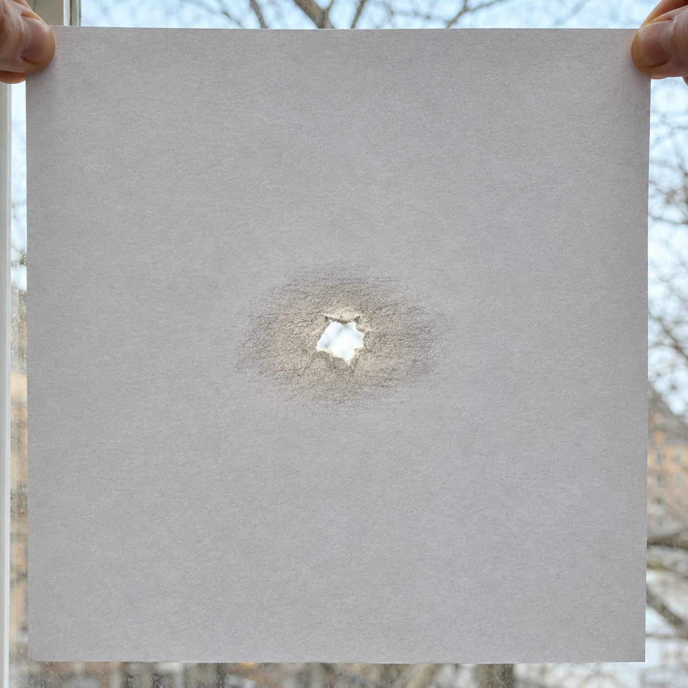
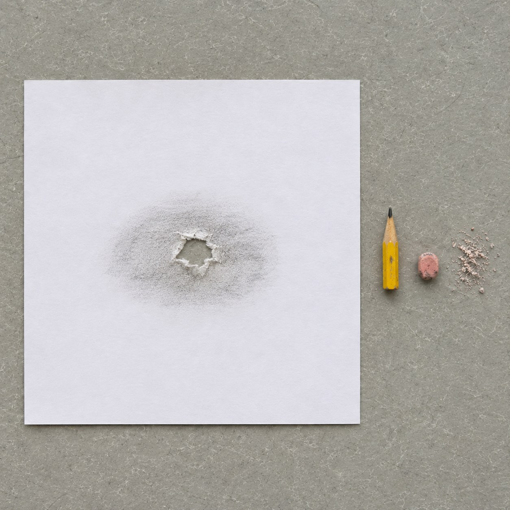

Rubbed Through


On a sheet of white paper I wrote one word in pencil: AGAIN. Then I rubbed it out. Then I wrote it again in the same place, and rubbed it out, and went on, because the word asked me to. It was the only instruction on the page, and it never ran out.
An eraser promises to take a thing back to before. It never quite does. Each time it lifts the graphite, it lifts a little of the paper too, a thin skin of fibre too fine to see going. The page looks clean. It is a little less page.
After some hundreds of times the paper went grey and soft in that one spot, like cloth at an elbow. Then it grew thin enough to see the window through. Then, on a stroke like all the others, it opened.
In 1953 Robert Rauschenberg asked Willem de Kooning for a drawing so that he could erase it, and de Kooning, on purpose, gave him one that would be hard to remove. What Rauschenberg framed was an almost empty sheet, and it was full of him. The rubbing out was the drawing.
In 1925 Sigmund Freud wrote about a small writing pad sold in shops: a slab of wax under a thin sheet of film. You write on the film, lift it, and the writing vanishes, but the wax beneath keeps every line ever pressed into it. He thought memory might work like that. A clean surface on top, and nothing truly lost underneath.
This sheet has no wax. It had nowhere to keep what was taken back, so it kept it the only way it could, by having less of itself. Every word I removed is in the hole. Not as writing. As the paper that is missing where the writing was.
The word cannot be written there now. There is no there. AGAIN was the one word on the page, and it is the one word the page has finally refused.